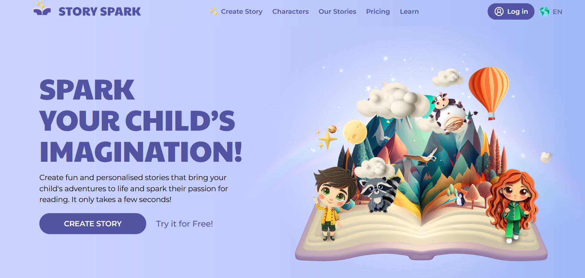
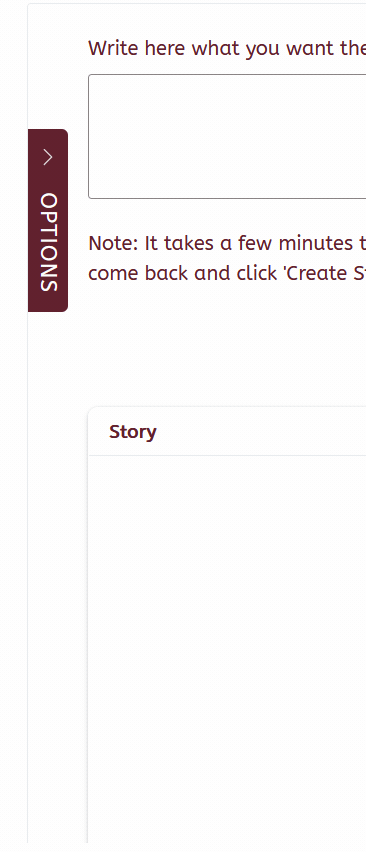
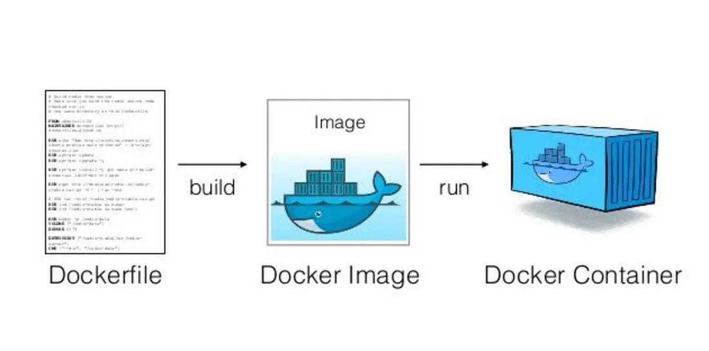

meta:
name: stoRytime
description: |
Create beautiful and alive stories with text-generation and image-generation models!
color:
palette:
foregroundcolor: "#61212D"
backgroundcolor: "#ffffff"
secondarycolor: "#03A9F4"
infocolor: "#00BCD4"
foreground: foregroundcolor
background: backgroundcolor
primary: foregroundcolor
secondary: secondarycolor
info: infocolor
typography:
fonts:
- family: ABeeZee
source: bunny
- family: Architects Daughter
source: bunny
- family: sans-serif
source: system
base:
family: ABeeZee, sans-serif
headings:
family: Architects Daughter, sans-serifBuilding Your Pit of Success
Practical Strategies for Shiny App Development and Deployment
Umair Durrani
https://dru.quarto.pub/slides-de54/
About Me
Umair Durrani
- Data Scientist and Shiny Developer at Presage Group Inc.
- Develop apps
- Analyze and present data
About You
Cat in Flow
Cat is a solitary animal, but its home is devastated by a great flood (IMDB)
New Shiny Developer
You work with data, but now need to create software, i.e., shiny
Practical strategies for development and deployment
Strategies
- Creating beautiful app layouts
- Write robust code
- Monitor your app
- Improve user experience
- Explore deployment options
- Learn and Practice
Demo App
Demo Video
1. Creating Beautiful Layouts
Use AI Tools
Shiny Assistant is trained on Shiny source code
- Available for both Shiny for R and Python
Ploomber AI Editor has more features:
- Provide an image with text instructions
- Download complete project
- Provide an image with text instructions
Both heavily use bslib
Ploomber AI Editor Example
Inspiration

Prompt: Create a shiny app that replicates the user interface in the attached image. Clicking the “create story” button should scroll to the “create your story” section. Skip the “try it for free” link.
Layout with bslib
bslib::navset_bar in bslib::page_fluid

Layout with bslib
Responsive Design with bslib::layout_columns

brand.yml for theming
- Create a
_brand.ymlfile in the root of your directory or ininstin a package based project
brand.yml for theming
- Use name in
meta, logos, fonts with plots, etc. For example, inglobal.R:

Sass for Customization
- Sass for customizing sidebar button
/* ---------------Sidebar options-------------- */
$sidebar-width: 400px
$sidebar-transition: 0.3s
$toggle-bg: var(--bs-primary)
$toggle-color: white
$toggle-padding: 15px 10px
$toggle-radius: 0 5px 5px 0
$toggle-top: 100px
$toggle-right: -40px
/* -----------------Sidebar------------------- */
@mixin sidebar-toggle
padding: $toggle-padding
background-color: $toggle-bg
position: absolute
border-radius: $toggle-radius
writing-mode: vertical-rl
text-orientation: mixed
height: auto
z-index: 1000
display: flex
align-items: center
justify-content: center
transition: all $sidebar-transition
top: $toggle-top
right: $toggle-right
@mixin sidebar-main
margin-left: $sidebar-width
transition: margin-left $sidebar-transition
width: calc(100% - $sidebar-width)
@mixin sidebar-closed
left: 0
right: auto
@mixin toggle-icon
fill: $toggle-color !important
margin-bottom: 10px
@mixin toggle-text
color: $toggle-color
font-size: 1.1em
text-transform: uppercase
letter-spacing: 1px
margin-top: 10px
@mixin sidebar-layout($sidebar-name, $open-text, $closed-text)
.#{$sidebar-name} .bslib-sidebar-layout
> .collapse-toggle
@include sidebar-toggle
& > .collapse-icon
@include toggle-icon
&::after
@include toggle-text
&[aria-expanded='true']::after
content: $open-text
&[aria-expanded='false']::after
content: $closed-text
> .main
@include sidebar-main
&:not(.sidebar-open)
> .collapse-toggle
@include sidebar-closed
> .main
margin-left: 0
width: 100%
> .sidebar
margin-left: 20px
@include sidebar-layout("custom-sidebar", "Close Options", "Options")
2. Write robust code
Functions
- Example: Creating the ‘Hero Section’:
create_hero_section <- function(title, subtitle){
div(
class = "hero-section",
layout_columns(
col_widths = breakpoints(
sm = c(-1, 10, -1),
md = c(-1, 5, 5, -1)
),
div(
h1(title, class = "hero-title"),
p(subtitle, class = "hero-text"),
input_task_button("get_started", "GET STARTED", class = "btn-lg", onclick = "scrollToCards()")
),
slickROutput("s")
)
)
}Tests
- Unit tests,
golem,shinytest2
- Example: Unit test for
get_storyfunction
Function:
get_story <- function(prompt,
num_of_sentences = 5,
max_tokens = 1000,
ACCOUNT_ID = Sys.getenv("ACCOUNT_ID"),
API_KEY = Sys.getenv("API_KEY"),
base_url = cf_base_url()){
if (is.null(prompt) | num_of_sentences < 3){
return(NULL)
}
if (test_profanity(prompt)){
return(NULL)
}
url_txt <- paste0(base_url, ACCOUNT_ID, "/ai/run/@cf/meta/llama-3.1-8b-instruct-fast")
# Make an API request
response_text <- httr2::request(url_txt) |>
httr2::req_headers(
"Authorization" = paste("Bearer", API_KEY)
) |>
httr2::req_body_json("...") |>
httr2::req_method("POST") |>
httr2::req_error(is_error = \(resp) FALSE) |>
httr2::req_perform() |>
httr2::resp_body_json()
"<Process and return response>"
}Unit test with httptest2 and testthat:
Modules
My Shiny hot take is that modules are not an advanced topic. (Emily Riederer)
Modules avoid clutter and make debugging easier
- Example: Asynchronous file downloads with
ExtendedTaskandmirai:
# Module
mod_download_stories_ui <- function(id, title) {
ns <- NS(id)
card(
height = 400,
full_screen = TRUE,
card_header(
title,
input_task_button(
ns("downloadBtn"),
label = "Download and Display",
class = "btn-sm btn-primary"
)
),
card_body(
tags$iframe(
id = paste0("htmlFrame", id),
style = "width: 100%; height: 100%; border: none;"
)
)
)
}
mod_download_stories_server <- function(id, title, html_file){
moduleServer(id, function(input, output, session){
ns <- session$ns
base_url <- "https://raw.githubusercontent.com/durraniu/examples-storytime/refs/heads/main/htmls/"
task <- ExtendedTask$new(
function(url, download_and_render_html) mirai(download_and_render_html(url), environment())
) |> bind_task_button("downloadBtn")
observeEvent(input$downloadBtn, {
# Complete URL for this HTML file
url <- paste0(base_url, html_file)
# Download the HTML content
task$invoke(url, download_and_render_html)
})
observe({
html_content <- task$result()
showNotification(paste0("Rendering ", title, "..."), type = "message", duration = 2)
# Set the iframe source to display the HTML content
js_code <- sprintf('
var iframe = document.getElementById("htmlFrame%s");
iframe.srcdoc = %s;
', id, jsonlite::toJSON(html_content))
shinyjs::runjs(js_code)
})
})
}Modules

3. Monitor your app for errors
Use sentryR
Sentry is an application monitoring software
-sentryRis an unofficial R client for Sentry


sentryR setup

Monitor errors
get_browser_info <- function() {
user_agent <- session$request$HTTP_USER_AGENT # browser
remote_addr <- session$request$REMOTE_ADDR # ip
list(
user_agent = if (is.null(user_agent)) "Unknown" else user_agent,
remote_addr = if (is.null(remote_addr)) "Unknown" else remote_addr
)
}
error_handler <- function() {
e <- get("e", envir = parent.frame())
stack_trace <- shiny::printStackTrace(e) |>
utils::capture.output(type = "message") |>
list()
browser <- get_browser_info()
# Send the original error object with additional context to Sentry
sentryR::capture(
message = geterrmessage(),
extra = list(
Browser = browser$user_agent,
IP = browser$remote_addr,
"Stack trace" = stack_trace
)
)
}
options(shiny.error = error_handler)Monitor errors
4. Improve user experience
Improve user experience
shiny::useBusyIndicators()orwaiter
- Async programming with
ExtendedTask
- Homepage with buttons and guides for complex apps (e.g.,
cicerone)
5. Explore deployment options
Deployment
- Simple and easy, but less flexible/costly: shinyapps.io and Posit Connect Cloud
- Hard: Virtual machines on AWS or Google Cloud, etc.
- Google Cloud Run (requires docker) –>
golem,shinydocker, etc.

Deployment
6. Learn and Practice
Resources
Community
- Using brand_yml:
Garrick Aden-Buie
- Creating custom sidebar button:
Vedha Viyash - http testing:
Maëlle Salmon - Logging (
shiny::printStackTrace):Tan Ho
Shiny Meetings
Learn and practice together!

Questions
- Join Shiny Meetings: https://github.com/shiny-meetings/shiny-meetings
- @transport-talk.bsky.social
Demo App
Demo App Source
Slides
Slides Source